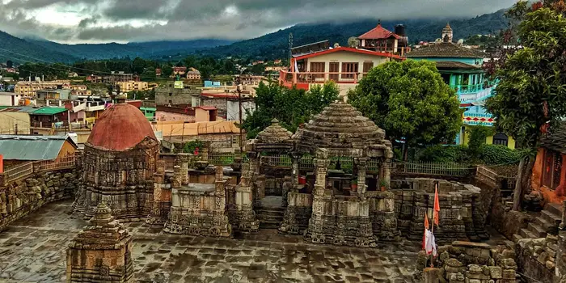
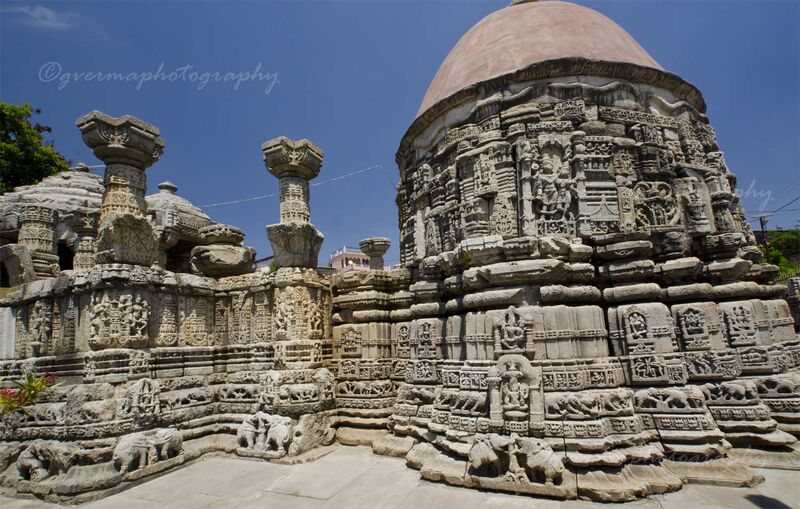
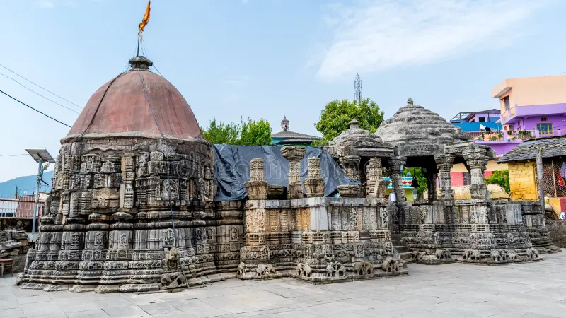
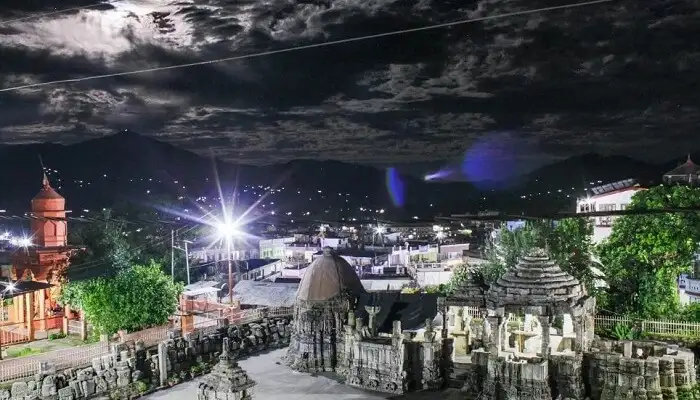

Baleshwar Temple is one of the most ancient and architecturally significant temples in Champawat, Uttarakhand, dedicated to Lord Shiva. Built during the 10th–12th century by the Chand dynasty rulers, this temple stands as a remarkable example of traditional Kumaoni stone architecture. The temple complex features beautifully carved stone walls, intricate sculptures, and detailed engravings that reflect the rich cultural and historical heritage of the region.
The temple complex includes shrines dedicated to Lord Shiva, Goddess Durga, and other deities, making it an important spiritual and cultural center. Surrounded by peaceful surroundings and traditional village life, Baleshwar Temple offers a divine and calm atmosphere for devotees and visitors. The detailed stone carvings, especially on doors and pillars, showcase mythological stories and ancient craftsmanship, making it a must-visit for history lovers, architecture enthusiasts, and spiritual seekers alike.
The temple can be visited throughout the year, but March to June offers pleasant weather for exploration. During Maha Shivratri, the temple becomes vibrant with celebrations and attracts many devotees. September to November also provides a calm and comfortable experience with clear weather.
Darshan of Lord Shiva, exploring ancient stone carvings and sculptures, photography of temple architecture, experiencing local culture, and attending festivals like Maha Shivratri. The temple complex itself is a blend of spirituality and historical artistry.
Visit during early morning or evening for a peaceful experience. Maintain respect for the temple environment and traditions. Carry basic essentials while exploring nearby areas. Photography is allowed but be mindful of sacred spaces. Ideal for those interested in history, architecture, and spirituality.
"At Baleshwar Temple, where ancient stones whisper stories of devotion and time, one feels the presence of the divine not just in prayer, but in every carved detail — a timeless connection between faith, art, and the soul."